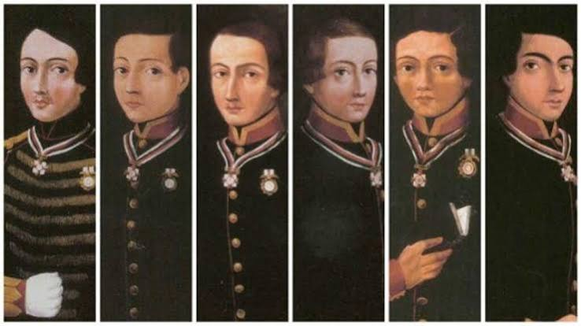
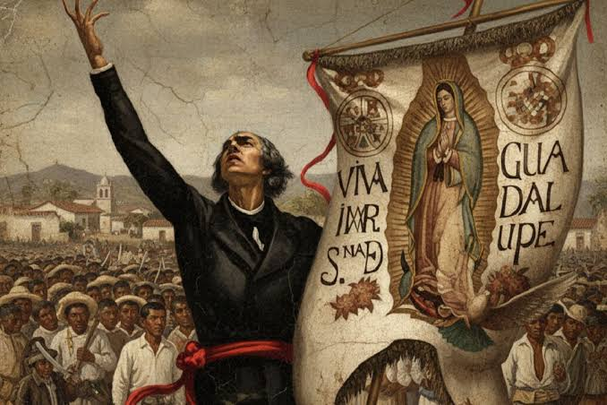

Fechas Importantes

Se recuerda la heroica defensa del Castillo de Chapultepec en 1847 durante la guerra mexicano-estadounidense. Este hecho es especialmente significativo por la participación de los llamados Niños Héroes, cadetes del Heroico Colegio Militar que murieron en combate.

fecha oficial del inicio de la guerra de independencia con el desfile militar tradicional.
